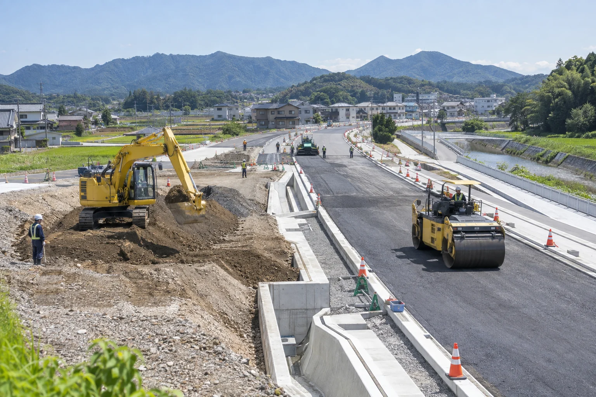
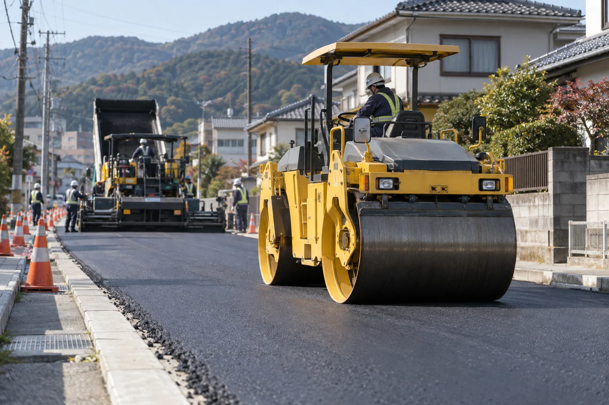
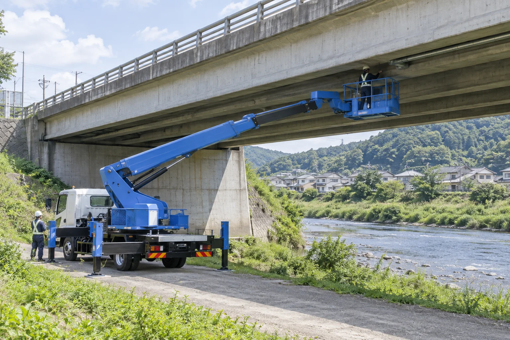
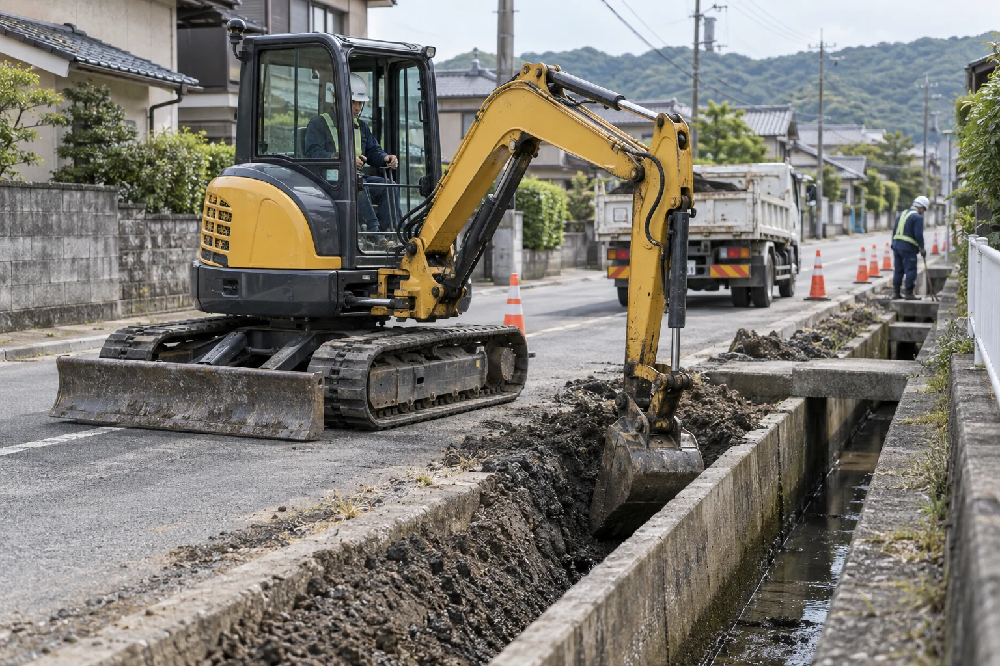

Our Business
事業紹介
道路も、橋も、水の流れも。
地域の暮らしを、現場から。
毎日通る道、街をつなぐ橋、雨水を流す排水設備。
蒼建は、道路・橋梁・排水設備の点検や整備を通して、
地域の当たり前の暮らしを支えます。

道路舗装工事
路面の状態を確認し、
舗装・補修を行います。
車や歩行者が毎日使う道路は、時間の経過とともに傷みが生じます。路面のひび割れや凹凸を確認し、現場の状況に合わせて舗装の改修・整備を行います。

 関連する施工実績市道舗装改修工事
関連する施工実績市道舗装改修工事
橋梁の点検・整備
橋の傷みを点検し、
必要な整備につなげます。
橋の接合部やボルトなどの状態を点検し、傷みや異常を確認します。現場で確認した内容を記録し、点検結果に応じた整備・補修につなげます。

 関連する施工実績河川橋梁点検・補修工事
関連する施工実績河川橋梁点検・補修工事
排水設備の整備
側溝や排水設備を整え、
雨水の流れを確保します。
道路脇の側溝や排水設備の詰まり・破損を確認し、清掃・整備を行います。雨水が流れる経路を確保し、道路や住宅地の環境を維持します。

 関連する施工実績住宅地排水設備改修工事
関連する施工実績住宅地排水設備改修工事
Flow
ご相談から施工まで
現場の状況とご要望を確認し、一つひとつの工程を進めます。
- 01
お問い合わせ
工事の内容やお困りごとをお聞かせください。
- 02
現地確認
現場の状態や周辺環境を確認します。
- 03
ご提案・お見積り
作業内容・費用・日程をご案内します。
- 04
施工
ご確認いただいた内容に沿って作業を進めます。
- 05
完了確認
仕上がりを確認し、施工内容をご報告します。